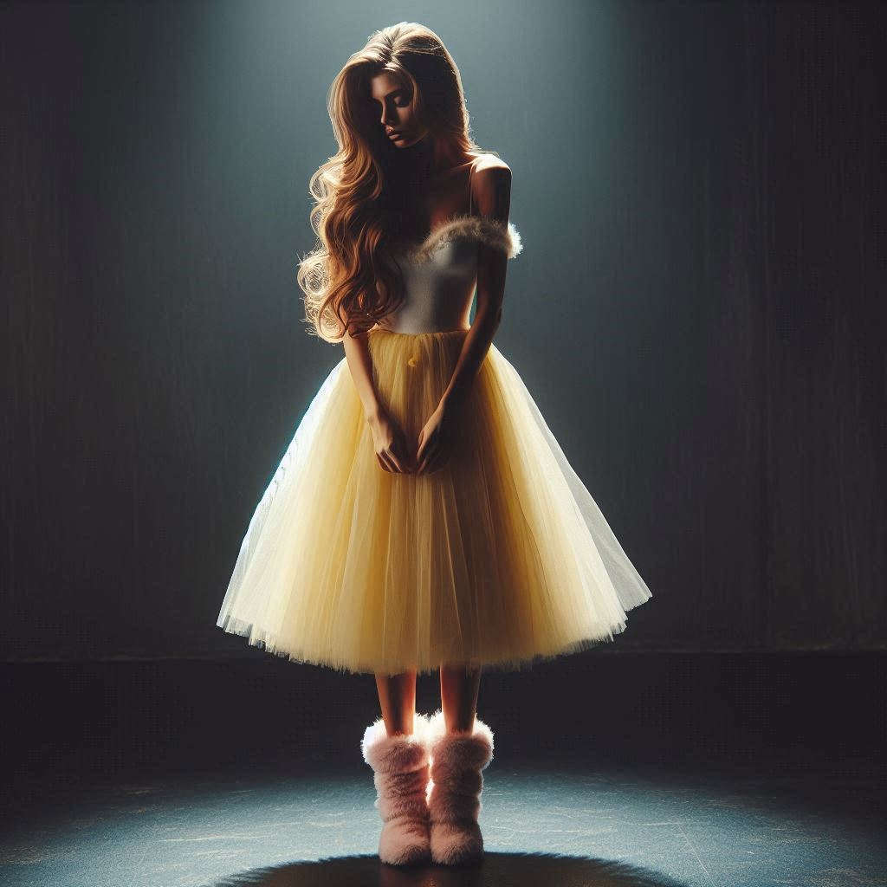

Dashing through the door, the team found themselves in a room filled with muted messages. The walls were covered in strange symbols and the air was thick with an eerie silence.
"What is going on here?" asked Stella, looking around. "It's like we're in a room full of secrets."
"I don't know," replied Raviolo, trying to decipher the symbols. "But we need to be careful. We don't know what could be hidden in these messages."
"Maybe it's a trap," suggested Toadette, looking worried. "We should be careful."
Suddenly, Grey Box saw something moving in the corner of the room. "Look!" he shouted, pointing to a shadowy figure lurking in the darkness.

A light shone on the figure, revealing a pretty lady dressed in a white dress with a yellow tutu; she wore a matching colour skirt and a white top, as well as pink shearling boots. Her hair was long and flowing, and she had a torment expression on her face.
(Image generated by AI)
"There you all are!" she exclaimed, her voice echoing in the silence. "I've been waiting for you! I need your help!"
"Who are you?" asked Stella, stepping forward. "What do you need help with?"
"They are all watching us," the lady said, her eyes wide with fear. "I can't stay here much longer. You have to help me escape!"
"Escape? From what?" asked Raviolo, confused.
"I was trapped here by an evil person named Dora Dharman," the lady explained. "She has been using these muted messages to control me and keep me from leaving. But I can't take it anymore! I need your help to break free!"
"We'll help you," said Toadette, stepping forward. "But we need to know more about this Dora Dharman and how to break the control she has over you."
"Toadette! You have the attention span of a goldfish" Door said. "That name, that's MY name! I am Dora Dharman!"
The anonymous lady gasped, her eyes wide with shock. "No! You can't be! You're not like her!"
"Well obviously", Raviolo said. "We all have a bigger problem to deal with. "Dora realised her mistake and is on our side now. We need to stop an apocalypse from happening!"
"An apocalypse?" the lady asked, her voice trembling. "What do you mean?"
"Dora Dharman's friend, Bruno Ó Ciardha, is trying to destroy the world," Raviolo explained. "We need to stop him before it's too late!"
"But how?" the lady asked, her voice shaking. "I don't know how to break free from her control!"
"Just follow my lead," Raviolo said, his voice steady. "We'll figure it out together. We just need to stay focused and work as a team!"
"Okay," the lady said, her voice trembling. "I'll do my best. But I don't know if I can trust you." She looked at Raviolo, her eyes filled with doubt.
"You can trust me," Raviolo said, his voice steady. "I promise I won't let you down. We'll get through this together... uh, what was your name again?"
"Heleena Lengyel is my name," the lady said, her voice steadying. "And I will do whatever it takes to help you stop this apocalypse!"
"Great!" Raviolo said, a smile spreading across his face. "Now let's get to work!"